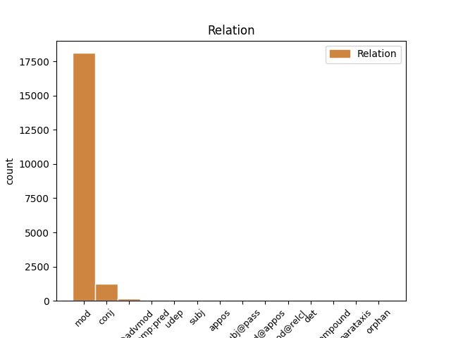
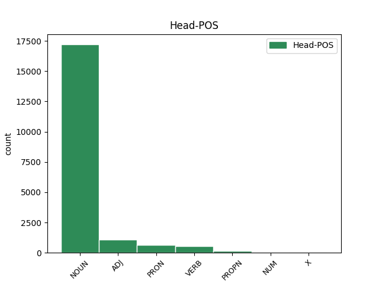
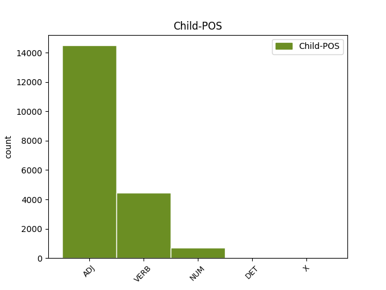

Distribution of features within this leaf



Agreement Rules sorted by frequency.
- When the dependent token is the modifer(mod) of the head token, and the dependent token is ADJ.
1 si _ _ _ _ 0 _ _ _
2 autem _ _ _ _ 0 _ _ _
3 secundum _ _ _ _ 0 _ _ _
4 aliquid _ _ _ _ 0 _ _ _
5 sui _ _ _ _ 0 _ _ _
6 sit _ _ _ _ 0 _ _ _
7 forma _ _ _ _ 0 _ _ _
8 , _ _ _ _ 0 _ _ _
9 id _ _ _ _ 0 _ _ _
10 quod _ _ _ _ 0 _ _ _
11 est _ _ _ _ 0 _ _ _
12 forma _ _ _ _ 0 _ _ _
13 dicimus _ _ _ _ 0 _ _ _
14 animam _ _ _ _ 0 _ _ _
15 , _ _ _ _ 0 _ _ _
16 et _ _ _ _ 0 _ _ _
17 id _ _ _ _ 0 _ _ _
18 cuius _ _ _ _ 0 _ _ _
19 est _ _ _ _ 0 _ _ _
20 forma _ _ _ _ 0 _ _ _
21 dicimus _ _ _ _ 0 _ _ _
22 primum primus ADJ B1|grn1|casD|gen3 Case=Acc|Degree=Pos|Gender=Neut|Number=Sing|NumType=Ord 23 mod _ _
23 animatum animo VERB J2|modM|tem4|grp1|casD|gen3 Aspect=Perf|Case=Acc|Degree=Pos|Gender=Neut|Number=Sing|Tense=Past|VerbForm=Part|Voice=Pass 0 _ _ _
24 , _ _ _ _ 0 _ _ _
25 ut _ _ _ _ 0 _ _ _
26 supra _ _ _ _ 0 _ _ _
27 dictum _ _ _ _ 0 _ _ _
28 est _ _ _ _ 0 _ _ _
29 . _ _ _ _ 0 _ _ _
1 unde _ _ _ _ 0 _ _ _
2 videmus _ _ _ _ 0 _ _ _
3 quod _ _ _ _ 0 _ _ _
4 forma _ _ _ _ 0 _ _ _
5 mixti misceo VERB K2|modM|tem4|grp1|casB|gen3|vgr1 Aspect=Perf|Case=Gen|Degree=Pos|Gender=Neut|Number=Sing|Tense=Past|VerbForm=Part|Voice=Pass 6 mod _ _
6 corporis corpus NOUN C1|grn1|casB|gen3 Case=Gen|Degree=Pos|Gender=Neut|Number=Sing 0 _ _ _
7 habet _ _ _ _ 0 _ _ _
8 aliquam _ _ _ _ 0 _ _ _
9 operationem _ _ _ _ 0 _ _ _
10 quae _ _ _ _ 0 _ _ _
11 non _ _ _ _ 0 _ _ _
12 causatur _ _ _ _ 0 _ _ _
13 ex _ _ _ _ 0 _ _ _
14 qualitatibus _ _ _ _ 0 _ _ _
15 elementaribus _ _ _ _ 0 _ _ _
16 . _ _ _ _ 0 _ _ _
1 sed _ _ _ _ 0 _ _ _
2 forma _ _ _ _ 0 _ _ _
3 rei _ _ _ _ 0 _ _ _
4 intellectae _ _ _ _ 0 _ _ _
5 non _ _ _ _ 0 _ _ _
6 recipitur _ _ _ _ 0 _ _ _
7 in _ _ _ _ 0 _ _ _
8 intellectu _ _ _ _ 0 _ _ _
9 materialiter _ _ _ _ 0 _ _ _
10 et _ _ _ _ 0 _ _ _
11 individualiter _ _ _ _ 0 _ _ _
12 , _ _ _ _ 0 _ _ _
13 sed _ _ _ _ 0 _ _ _
14 magis _ _ _ _ 0 _ _ _
15 immaterialiter _ _ _ _ 0 _ _ _
16 et _ _ _ _ 0 _ _ _
17 universaliter _ _ _ _ 0 _ _ _
18 , _ _ _ _ 0 _ _ _
19 alioquin _ _ _ _ 0 _ _ _
20 intellectus _ _ _ _ 0 _ _ _
21 non _ _ _ _ 0 _ _ _
22 esset _ _ _ _ 0 _ _ _
23 cognoscitivus _ _ _ _ 0 _ _ _
24 immaterialium _ _ _ _ 0 _ _ _
25 et _ _ _ _ 0 _ _ _
26 universalium universalis ADJ C1|grn1|casK|gen3|vgr1 Case=Gen|Degree=Pos|Gender=Neut|Number=Plur 0 _ _ _
27 , _ _ _ _ 0 _ _ _
28 sed _ _ _ _ 0 _ _ _
29 singularium singularis ADJ C1|grn1|casK|gen3 Case=Gen|Degree=Pos|Gender=Neut|Number=Plur 26 conj _ _
30 tantum _ _ _ _ 0 _ _ _
31 , _ _ _ _ 0 _ _ _
32 sicut _ _ _ _ 0 _ _ _
33 et _ _ _ _ 0 _ _ _
34 sensus _ _ _ _ 0 _ _ _
35 . _ _ _ _ 0 _ _ _
1 non _ _ _ _ 0 _ _ _
2 enim _ _ _ _ 0 _ _ _
3 potest _ _ _ _ 0 _ _ _
4 intelligi _ _ _ _ 0 _ _ _
5 quod _ _ _ _ 0 _ _ _
6 aliqua _ _ _ _ 0 _ _ _
7 forma _ _ _ _ 0 _ _ _
8 separata _ _ _ _ 0 _ _ _
9 sit _ _ _ _ 0 _ _ _
10 nisi _ _ _ _ 0 _ _ _
11 una _ _ _ _ 0 _ _ _
12 unius unus NUM F1|grn1|casB|gen2|vgr2 Case=Gen|Degree=Pos|Gender=Fem|Number=Sing|NumType=Card 13 mod _ _
13 speciei species NOUN E1|grn1|casB|gen2 Case=Gen|Degree=Pos|Gender=Fem|Number=Sing 0 _ _ _
14 , _ _ _ _ 0 _ _ _
15 sicut _ _ _ _ 0 _ _ _
16 si _ _ _ _ 0 _ _ _
17 esset _ _ _ _ 0 _ _ _
18 albedo _ _ _ _ 0 _ _ _
19 separata _ _ _ _ 0 _ _ _
20 , _ _ _ _ 0 _ _ _
21 non _ _ _ _ 0 _ _ _
22 posset _ _ _ _ 0 _ _ _
23 esse _ _ _ _ 0 _ _ _
24 nisi _ _ _ _ 0 _ _ _
25 una _ _ _ _ 0 _ _ _
26 tantum _ _ _ _ 0 _ _ _
27 ; _ _ _ _ 0 _ _ _
1 et _ _ _ _ 0 _ _ _
2 ideo _ _ _ _ 0 _ _ _
3 per _ _ _ _ 0 _ _ _
4 congregationem _ _ _ _ 0 _ _ _
5 aquarum _ _ _ _ 0 _ _ _
6 et _ _ _ _ 0 _ _ _
7 apparentiam _ _ _ _ 0 _ _ _
8 aridae _ _ _ _ 0 _ _ _
9 , _ _ _ _ 0 _ _ _
10 impressio _ _ _ _ 0 _ _ _
11 talium _ _ _ _ 0 _ _ _
12 formarum _ _ _ _ 0 _ _ _
13 designatur _ _ _ _ 0 _ _ _
14 , _ _ _ _ 0 _ _ _
15 aqua _ _ _ _ 0 _ _ _
16 enim _ _ _ _ 0 _ _ _
17 est _ _ _ _ 0 _ _ _
18 labiliter _ _ _ _ 0 _ _ _
19 fluxa fluo VERB L2|modM|tem4|grp1|casA|gen2 Aspect=Perf|Case=Nom|Degree=Pos|Gender=Fem|Number=Sing|Tense=Past|VerbForm=Part|Voice=Pass 0 _ _ _
20 , _ _ _ _ 0 _ _ _
21 terra _ _ _ _ 0 _ _ _
22 stabiliter _ _ _ _ 0 _ _ _
23 fixa figo VERB L2|modM|tem4|grp1|casA|gen2 Aspect=Perf|Case=Nom|Degree=Pos|Gender=Fem|Number=Sing|Tense=Past|VerbForm=Part|Voice=Pass 19 conj _ SpaceAfter=No
24 , _ _ _ _ 0 _ _ _
25 ut _ _ _ _ 0 _ _ _
26 ipse _ _ _ _ 0 _ _ _
27 dicit _ _ _ _ 0 _ _ _
28 in _ _ _ _ 0 _ _ _
29 ii _ _ _ _ 0 _ _ _
30 super _ _ _ _ 0 _ _ _
31 gen. _ _ _ _ 0 _ _ _
32 ad _ _ _ _ 0 _ _ _
33 litt. _ _ _ _ 0 _ _ _
34 . _ _ _ _ 0 _ _ _
1 hoc _ _ _ _ 0 _ _ _
2 ergo _ _ _ _ 0 _ _ _
3 principium _ _ _ _ 0 _ _ _
4 quo qui PRON F1|grn1|casF|gen3 Case=Abl|Degree=Pos|Gender=Neut|Number=Sing|PronType=Rel 0 _ _ _
5 primo primus ADJ B1|grn1|casF|gen3 Case=Abl|Degree=Pos|Gender=Neut|Number=Sing|NumType=Ord 4 mod@advmod _ _
6 intelligimus _ _ _ _ 0 _ _ _
7 , _ _ _ _ 0 _ _ _
8 sive _ _ _ _ 0 _ _ _
9 dicatur _ _ _ _ 0 _ _ _
10 intellectus _ _ _ _ 0 _ _ _
11 sive _ _ _ _ 0 _ _ _
12 anima _ _ _ _ 0 _ _ _
13 intellectiva _ _ _ _ 0 _ _ _
14 , _ _ _ _ 0 _ _ _
15 est _ _ _ _ 0 _ _ _
16 forma _ _ _ _ 0 _ _ _
17 corporis _ _ _ _ 0 _ _ _
18 . _ _ _ _ 0 _ _ _
1 alio _ _ _ _ 0 _ _ _
2 modo _ _ _ _ 0 _ _ _
3 per _ _ _ _ 0 _ _ _
4 modum _ _ _ _ 0 _ _ _
5 qualitatis _ _ _ _ 0 _ _ _
6 et _ _ _ _ 0 _ _ _
7 formae _ _ _ _ 0 _ _ _
8 , _ _ _ _ 0 _ _ _
9 quando _ _ _ _ 0 _ _ _
10 impressio _ _ _ _ 0 _ _ _
11 activi _ _ _ _ 0 _ _ _
12 jam _ _ _ _ 0 _ _ _
13 facta facio VERB N2|modM|tem4|grp1|casA|gen2 Aspect=Perf|Case=Nom|Degree=Pos|Gender=Fem|Number=Sing|Tense=Past|VerbForm=Part|Voice=Pass 0 _ _ _
14 est _ _ _ _ 0 _ _ _
15 connaturalis connaturalis ADJ C1|grn1|casA|gen2 Case=Nom|Degree=Pos|Gender=Fem|Number=Sing 13 comp:pred _ _
16 ipsi _ _ _ _ 0 _ _ _
17 passivo _ _ _ _ 0 _ _ _
18 ; _ _ _ _ 0 _ _ _
1 sequitur _ _ _ _ 0 _ _ _
2 ulterius _ _ _ _ 0 _ _ _
3 quod _ _ _ _ 0 _ _ _
4 etiam _ _ _ _ 0 _ _ _
5 formae _ _ _ _ 0 _ _ _
6 corporales _ _ _ _ 0 _ _ _
7 a _ _ _ _ 0 _ _ _
8 substantiis substantia NOUN A1|grn1|casO|gen2 Case=Abl|Degree=Pos|Gender=Fem|Number=Plur 0 _ _ _
9 spiritualibus _ _ _ _ 0 _ _ _
10 deriventur _ _ _ _ 0 _ _ _
11 , _ _ _ _ 0 _ _ _
12 non _ _ _ _ 0 _ _ _
13 tanquam _ _ _ _ 0 _ _ _
14 influentibus influo VERB L2|modD|tem1|grp1|casO|gen2 Case=Abl|Degree=Pos|Gender=Fem|Number=Plur|Tense=Pres|VerbForm=Part|Voice=Act 8 mod@advmod _ _
15 formas _ _ _ _ 0 _ _ _
16 , _ _ _ _ 0 _ _ _
17 sed _ _ _ _ 0 _ _ _
18 tanquam _ _ _ _ 0 _ _ _
19 moventibus _ _ _ _ 0 _ _ _
20 ad _ _ _ _ 0 _ _ _
21 formas _ _ _ _ 0 _ _ _
22 . _ _ _ _ 0 _ _ _
1 in _ _ _ _ 0 _ _ _
2 divinis _ _ _ _ 0 _ _ _
3 autem _ _ _ _ 0 _ _ _
4 essentia _ _ _ _ 0 _ _ _
5 divina _ _ _ _ 0 _ _ _
6 significatur _ _ _ _ 0 _ _ _
7 per _ _ _ _ 0 _ _ _
8 modum _ _ _ _ 0 _ _ _
9 formae _ _ _ _ 0 _ _ _
10 , _ _ _ _ 0 _ _ _
11 ut _ _ _ _ 0 _ _ _
12 dictum _ _ _ _ 0 _ _ _
13 est _ _ _ _ 0 _ _ _
14 quae _ _ _ _ 0 _ _ _
15 quidem _ _ _ _ 0 _ _ _
16 simplex simplex ADJ C1|grn1|casA|gen2 Case=Nom|Degree=Pos|Gender=Fem|Number=Sing 0 _ _ _
17 est _ _ _ _ 0 _ _ _
18 et _ _ _ _ 0 _ _ _
19 maxime _ _ _ _ 0 _ _ _
20 una unus NUM F1|grn1|casA|gen2 Case=Nom|Degree=Pos|Gender=Fem|Number=Sing|NumType=Card 16 conj _ SpaceAfter=No
21 , _ _ _ _ 0 _ _ _
22 ut _ _ _ _ 0 _ _ _
23 supra _ _ _ _ 0 _ _ _
24 ostensum _ _ _ _ 0 _ _ _
25 est _ _ _ _ 0 _ _ _
26 . _ _ _ _ 0 _ _ _
1 primo _ _ _ _ 0 _ _ _
2 per _ _ _ _ 0 _ _ _
3 hoc _ _ _ _ 0 _ _ _
4 quod _ _ _ _ 0 _ _ _
5 habetur _ _ _ _ 0 _ _ _
6 in _ _ _ _ 0 _ _ _
7 lib. _ _ _ _ 0 _ _ _
8 de _ _ _ _ 0 _ _ _
9 causis _ _ _ _ 0 _ _ _
10 , _ _ _ _ 0 _ _ _
11 quia _ _ _ _ 0 _ _ _
12 intelligentiae _ _ _ _ 0 _ _ _
13 primae _ _ _ _ 0 _ _ _
14 influunt _ _ _ _ 0 _ _ _
15 formas _ _ _ _ 0 _ _ _
16 fixas figo VERB L2|modM|tem4|grp1|casM|gen2 Aspect=Perf|Case=Acc|Degree=Pos|Gender=Fem|Number=Plur|Tense=Past|VerbForm=Part|Voice=Pass 17 comp:pred _ _
17 stantes sto VERB J2|modD|tem1|grp1|casM|gen2 Case=Acc|Degree=Pos|Gender=Fem|Number=Plur|Tense=Pres|VerbForm=Part|Voice=Act 0 _ _ _
18 , _ _ _ _ 0 _ _ _
19 sicut _ _ _ _ 0 _ _ _
20 est _ _ _ _ 0 _ _ _
21 anima _ _ _ _ 0 _ _ _
22 . _ _ _ _ 0 _ _ _
1 sicut _ _ _ _ 0 _ _ _
2 homo _ _ _ _ 0 _ _ _
3 perficitur _ _ _ _ 0 _ _ _
4 per _ _ _ _ 0 _ _ _
5 proprias proprius ADJ A1|grn1|casM|gen2 Case=Acc|Degree=Pos|Gender=Fem|Number=Plur 6 udep _ _
6 partes pars NOUN C1|grn1|casM|gen2 Case=Acc|Degree=Pos|Gender=Fem|Number=Plur 0 _ _ _
7 et _ _ _ _ 0 _ _ _
8 formas _ _ _ _ 0 _ _ _
9 , _ _ _ _ 0 _ _ _
10 ornatur _ _ _ _ 0 _ _ _
11 autem _ _ _ _ 0 _ _ _
12 per _ _ _ _ 0 _ _ _
13 vestimenta _ _ _ _ 0 _ _ _
14 , _ _ _ _ 0 _ _ _
15 vel _ _ _ _ 0 _ _ _
16 aliquid _ _ _ _ 0 _ _ _
17 huiusmodi _ _ _ _ 0 _ _ _
18 . _ _ _ _ 0 _ _ _
1 sed _ _ _ _ 0 _ _ _
2 christus _ _ _ _ 0 _ _ _
3 secundum _ _ _ _ 0 _ _ _
4 formam _ _ _ _ 0 _ _ _
5 humanitatis _ _ _ _ 0 _ _ _
6 gloriosam _ _ _ _ 0 _ _ _
7 non _ _ _ _ 0 _ _ _
8 poterit _ _ _ _ 0 _ _ _
9 videri _ _ _ _ 0 _ _ _
10 ab _ _ _ _ 0 _ _ _
11 omnibus omnis PRON C1|grn1|casO|gen1 Case=Abl|Degree=Pos|Gender=Masc|Number=Plur|PronType=Ind 0 _ _ _
12 , _ _ _ _ 0 _ _ _
13 bonis bonus ADJ B1|grn1|casO|gen1 Case=Abl|Degree=Pos|Gender=Masc|Number=Plur 11 appos _ _
14 et _ _ _ _ 0 _ _ _
15 malis _ _ _ _ 0 _ _ _
16 ; _ _ _ _ 0 _ _ _
17 quia _ _ _ _ 0 _ _ _
18 oculus _ _ _ _ 0 _ _ _
19 non _ _ _ _ 0 _ _ _
20 glorificatus _ _ _ _ 0 _ _ _
21 non _ _ _ _ 0 _ _ _
22 videtur _ _ _ _ 0 _ _ _
23 esse _ _ _ _ 0 _ _ _
24 proportionatus _ _ _ _ 0 _ _ _
25 ad _ _ _ _ 0 _ _ _
26 videndum _ _ _ _ 0 _ _ _
27 claritatem _ _ _ _ 0 _ _ _
28 corporis _ _ _ _ 0 _ _ _
29 gloriosi _ _ _ _ 0 _ _ _
30 . _ _ _ _ 0 _ _ _
1 boetius _ _ _ _ 0 _ _ _
2 enim _ _ _ _ 0 _ _ _
3 dicit _ _ _ _ 0 _ _ _
4 in _ _ _ _ 0 _ _ _
5 comment. _ _ _ _ 0 _ _ _
6 praedicamentorum _ _ _ _ 0 _ _ _
7 quod _ _ _ _ 0 _ _ _
8 aristoteles _ _ _ _ 0 _ _ _
9 , _ _ _ _ 0 _ _ _
10 relictis relinquo VERB L2|modM|tem4|grp1|casO|gen3 Aspect=Perf|Case=Abl|Degree=Pos|Gender=Neut|Number=Plur|Tense=Past|VerbForm=Part|Voice=Pass 0 _ _ _
11 extremis exterior ADJ B1|grn3|casO|gen3 Case=Abl|Degree=Abs|Gender=Neut|Number=Plur 10 subj@pass _ SpaceAfter=No
12 , _ _ _ _ 0 _ _ _
13 scilicet _ _ _ _ 0 _ _ _
14 materia _ _ _ _ 0 _ _ _
15 et _ _ _ _ 0 _ _ _
16 forma _ _ _ _ 0 _ _ _
17 , _ _ _ _ 0 _ _ _
18 agit _ _ _ _ 0 _ _ _
19 de _ _ _ _ 0 _ _ _
20 medio _ _ _ _ 0 _ _ _
21 , _ _ _ _ 0 _ _ _
22 idest _ _ _ _ 0 _ _ _
23 de _ _ _ _ 0 _ _ _
24 composito _ _ _ _ 0 _ _ _
25 , _ _ _ _ 0 _ _ _
26 cum _ _ _ _ 0 _ _ _
27 de _ _ _ _ 0 _ _ _
28 substantia _ _ _ _ 0 _ _ _
29 determinat _ _ _ _ 0 _ _ _
30 . _ _ _ _ 0 _ _ _
1 ad _ _ _ _ 0 _ _ _
2 sextum _ _ _ _ 0 _ _ _
3 dicendum _ _ _ _ 0 _ _ _
4 , _ _ _ _ 0 _ _ _
5 quod _ _ _ _ 0 _ _ _
6 cum _ _ _ _ 0 _ _ _
7 termini terminus NOUN B1|grn1|casJ|gen1 Case=Nom|Degree=Pos|Gender=Masc|Number=Plur 0 _ _ _
8 substantivi substantivus ADJ B1|grn1|casJ|gen1 Case=Nom|Degree=Pos|Gender=Masc|Number=Plur 7 subj _ _
9 significentur _ _ _ _ 0 _ _ _
10 vel _ _ _ _ 0 _ _ _
11 consignificentur _ _ _ _ 0 _ _ _
12 pluraliter _ _ _ _ 0 _ _ _
13 ex _ _ _ _ 0 _ _ _
14 unitate _ _ _ _ 0 _ _ _
15 seu _ _ _ _ 0 _ _ _
16 pluralitate _ _ _ _ 0 _ _ _
17 formae _ _ _ _ 0 _ _ _
18 signatae _ _ _ _ 0 _ _ _
19 , _ _ _ _ 0 _ _ _
20 dicerentur _ _ _ _ 0 _ _ _
21 tres _ _ _ _ 0 _ _ _
22 unus _ _ _ _ 0 _ _ _
23 homo _ _ _ _ 0 _ _ _
24 , _ _ _ _ 0 _ _ _
25 si _ _ _ _ 0 _ _ _
26 unam _ _ _ _ 0 _ _ _
27 humanam _ _ _ _ 0 _ _ _
28 naturam _ _ _ _ 0 _ _ _
29 assumpsissent _ _ _ _ 0 _ _ _
30 , _ _ _ _ 0 _ _ _
31 sicut _ _ _ _ 0 _ _ _
32 propter _ _ _ _ 0 _ _ _
33 unam _ _ _ _ 0 _ _ _
34 naturam _ _ _ _ 0 _ _ _
35 divinam _ _ _ _ 0 _ _ _
36 dicuntur _ _ _ _ 0 _ _ _
37 unus _ _ _ _ 0 _ _ _
38 deus _ _ _ _ 0 _ _ _
39 : _ _ _ _ 0 _ _ _
1 ad _ _ _ _ 0 _ _ _
2 quartum _ _ _ _ 0 _ _ _
3 dicendum _ _ _ _ 0 _ _ _
4 , _ _ _ _ 0 _ _ _
5 quod _ _ _ _ 0 _ _ _
6 cum _ _ _ _ 0 _ _ _
7 dicitur _ _ _ _ 0 _ _ _
8 , _ _ _ _ 0 _ _ _
9 deus _ _ _ _ 0 _ _ _
10 est _ _ _ _ 0 _ _ _
11 homo _ _ _ _ 0 _ _ _
12 , _ _ _ _ 0 _ _ _
13 ly ly DET G1|gen1|vgr1 Gender=Masc|PronType=Art 14 det _ _
14 homo homo NOUN C1|grn1|casA|gen1 Case=Nom|Degree=Pos|Gender=Masc|Number=Sing 0 _ _ _
15 quantum _ _ _ _ 0 _ _ _
16 ad _ _ _ _ 0 _ _ _
17 formam _ _ _ _ 0 _ _ _
18 significatam _ _ _ _ 0 _ _ _
19 est _ _ _ _ 0 _ _ _
20 absolutum _ _ _ _ 0 _ _ _
21 , _ _ _ _ 0 _ _ _
22 sed _ _ _ _ 0 _ _ _
23 quantum _ _ _ _ 0 _ _ _
24 ad _ _ _ _ 0 _ _ _
25 suppositum _ _ _ _ 0 _ _ _
26 habet _ _ _ _ 0 _ _ _
27 relationem _ _ _ _ 0 _ _ _
28 implicitam _ _ _ _ 0 _ _ _
29 : _ _ _ _ 0 _ _ _
1 ad _ _ _ _ 0 _ _ _
2 primum _ _ _ _ 0 _ _ _
3 ergo _ _ _ _ 0 _ _ _
4 dicendum _ _ _ _ 0 _ _ _
5 quod _ _ _ _ 0 _ _ _
6 , _ _ _ _ 0 _ _ _
7 secundum _ _ _ _ 0 _ _ _
8 augustinum _ _ _ _ 0 _ _ _
9 , _ _ _ _ 0 _ _ _
10 ideo _ _ _ _ 0 _ _ _
11 in _ _ _ _ 0 _ _ _
12 opere _ _ _ _ 0 _ _ _
13 tertiae _ _ _ _ 0 _ _ _
14 diei _ _ _ _ 0 _ _ _
15 non _ _ _ _ 0 _ _ _
16 utitur _ _ _ _ 0 _ _ _
17 scriptura _ _ _ _ 0 _ _ _
18 verbo _ _ _ _ 0 _ _ _
19 factionis _ _ _ _ 0 _ _ _
20 , _ _ _ _ 0 _ _ _
21 sicut _ _ _ _ 0 _ _ _
22 in _ _ _ _ 0 _ _ _
23 praecedentibus _ _ _ _ 0 _ _ _
24 operibus _ _ _ _ 0 _ _ _
25 , _ _ _ _ 0 _ _ _
26 ut _ _ _ _ 0 _ _ _
27 ostendatur _ _ _ _ 0 _ _ _
28 quod _ _ _ _ 0 _ _ _
29 superiores superior ADJ C1|grn2|casJ|gen2 Case=Nom|Degree=Cmp|Gender=Fem|Number=Plur 0 _ _ _
30 formae _ _ _ _ 0 _ _ _
31 , _ _ _ _ 0 _ _ _
32 scilicet _ _ _ _ 0 _ _ _
33 spirituales spiritualis ADJ C1|grn1|casJ|gen2|vgr1 Case=Nom|Degree=Pos|Gender=Fem|Number=Plur 29 mod@appos _ _
34 angelorum _ _ _ _ 0 _ _ _
35 , _ _ _ _ 0 _ _ _
36 et _ _ _ _ 0 _ _ _
37 caelestium _ _ _ _ 0 _ _ _
38 corporum _ _ _ _ 0 _ _ _
39 , _ _ _ _ 0 _ _ _
40 sunt _ _ _ _ 0 _ _ _
41 perfectae _ _ _ _ 0 _ _ _
42 in _ _ _ _ 0 _ _ _
43 esse _ _ _ _ 0 _ _ _
44 et _ _ _ _ 0 _ _ _
45 stabiles _ _ _ _ 0 _ _ _
46 ; _ _ _ _ 0 _ _ _
1 non _ _ _ _ 0 _ _ _
2 est _ _ _ _ 0 _ _ _
3 autem _ _ _ _ 0 _ _ _
4 possibile _ _ _ _ 0 _ _ _
5 quod _ _ _ _ 0 _ _ _
6 deus _ _ _ _ 0 _ _ _
7 aliquid aliquis PRON F1|grn1|casD|gen3 Case=Acc|Degree=Pos|Gender=Neut|Number=Sing|PronType=Ind 0 _ _ _
8 faciat _ _ _ _ 0 _ _ _
9 quod _ _ _ _ 0 _ _ _
10 non _ _ _ _ 0 _ _ _
11 sit _ _ _ _ 0 _ _ _
12 ab _ _ _ _ 0 _ _ _
13 eo _ _ _ _ 0 _ _ _
14 volitum volo VERB N2|modM|tem4|grp1|casA|gen3 Aspect=Perf|Case=Nom|Degree=Pos|Gender=Neut|Number=Sing|Tense=Past|VerbForm=Part|VerbType=Mod|Voice=Pass 7 mod@relcl _ SpaceAfter=No
15 : _ _ _ _ 0 _ _ _
16 cum _ _ _ _ 0 _ _ _
17 creaturae _ _ _ _ 0 _ _ _
18 ab _ _ _ _ 0 _ _ _
19 ipso _ _ _ _ 0 _ _ _
20 non _ _ _ _ 0 _ _ _
21 prodeant _ _ _ _ 0 _ _ _
22 naturaliter _ _ _ _ 0 _ _ _
23 , _ _ _ _ 0 _ _ _
24 sed _ _ _ _ 0 _ _ _
25 per _ _ _ _ 0 _ _ _
26 voluntatem _ _ _ _ 0 _ _ _
27 , _ _ _ _ 0 _ _ _
28 ut _ _ _ _ 0 _ _ _
29 ostensum _ _ _ _ 0 _ _ _
30 est _ _ _ _ 0 _ _ _
31 . _ _ _ _ 0 _ _ _
1 sed _ _ _ _ 0 _ _ _
2 in _ _ _ _ 0 _ _ _
3 eucharistia _ _ _ _ 0 _ _ _
4 sunt _ _ _ _ 0 _ _ _
5 duae _ _ _ _ 0 _ _ _
6 formae forma NOUN A1|grn1|casJ|gen2|vgr1 Case=Nom|Degree=Pos|Gender=Fem|Number=Plur 0 _ _ _
7 , _ _ _ _ 0 _ _ _
8 una unus NUM F1|grn1|casA|gen2 Case=Nom|Degree=Pos|Gender=Fem|Number=Sing|NumType=Card 6 appos _ _
9 ad _ _ _ _ 0 _ _ _
10 consecrationem _ _ _ _ 0 _ _ _
11 panis _ _ _ _ 0 _ _ _
12 , _ _ _ _ 0 _ _ _
13 alia _ _ _ _ 0 _ _ _
14 ad _ _ _ _ 0 _ _ _
15 consecrationem _ _ _ _ 0 _ _ _
16 sanguinis _ _ _ _ 0 _ _ _
17 . _ _ _ _ 0 _ _ _
1 et _ _ _ _ 0 _ _ _
2 ideo _ _ _ _ 0 _ _ _
3 alii _ _ _ _ 0 _ _ _
4 dicunt _ _ _ _ 0 _ _ _
5 , _ _ _ _ 0 _ _ _
6 quod _ _ _ _ 0 _ _ _
7 dicta _ _ _ _ 0 _ _ _
8 completio _ _ _ _ 0 _ _ _
9 , _ _ _ _ 0 _ _ _
10 ex _ _ _ _ 0 _ _ _
11 quo _ _ _ _ 0 _ _ _
12 corpora _ _ _ _ 0 _ _ _
13 humana _ _ _ _ 0 _ _ _
14 subtilia _ _ _ _ 0 _ _ _
15 dicentur _ _ _ _ 0 _ _ _
16 , _ _ _ _ 0 _ _ _
17 erit _ _ _ _ 0 _ _ _
18 ex _ _ _ _ 0 _ _ _
19 dominio _ _ _ _ 0 _ _ _
20 animae _ _ _ _ 0 _ _ _
21 glorificatae _ _ _ _ 0 _ _ _
22 , _ _ _ _ 0 _ _ _
23 quae _ _ _ _ 0 _ _ _
24 est _ _ _ _ 0 _ _ _
25 forma _ _ _ _ 0 _ _ _
26 corporis _ _ _ _ 0 _ _ _
27 , _ _ _ _ 0 _ _ _
28 super _ _ _ _ 0 _ _ _
29 ipsum _ _ _ _ 0 _ _ _
30 , _ _ _ _ 0 _ _ _
31 ratione _ _ _ _ 0 _ _ _
32 cujus _ _ _ _ 0 _ _ _
33 corpus _ _ _ _ 0 _ _ _
34 gloriosum _ _ _ _ 0 _ _ _
35 spirituale spiritualis ADJ C1|grn1|casA|gen3|vgr1 Case=Nom|Degree=Pos|Gender=Neut|Number=Sing 0 _ _ _
36 dicitur _ _ _ _ 0 _ _ _
37 , _ _ _ _ 0 _ _ _
38 quasi _ _ _ _ 0 _ _ _
39 omnino _ _ _ _ 0 _ _ _
40 spiritui _ _ _ _ 0 _ _ _
41 subjectum subicio VERB L2|modM|tem4|grp1|casA|gen3|vgr1 Aspect=Perf|Case=Nom|Degree=Pos|Gender=Neut|Number=Sing|Tense=Past|VerbForm=Part|Voice=Pass 35 mod@appos _ SpaceAfter=No
42 . _ _ _ _ 0 _ _ _
1 quandocumque _ _ _ _ 0 _ _ _
2 enim _ _ _ _ 0 _ _ _
3 aliqua _ _ _ _ 0 _ _ _
4 duo _ _ _ _ 0 _ _ _
5 , _ _ _ _ 0 _ _ _
6 quorum _ _ _ _ 0 _ _ _
7 unum _ _ _ _ 0 _ _ _
8 est _ _ _ _ 0 _ _ _
9 perfectius _ _ _ _ 0 _ _ _
10 altero _ _ _ _ 0 _ _ _
11 , _ _ _ _ 0 _ _ _
12 recipiuntur _ _ _ _ 0 _ _ _
13 in _ _ _ _ 0 _ _ _
14 eodem _ _ _ _ 0 _ _ _
15 receptibili _ _ _ _ 0 _ _ _
16 , _ _ _ _ 0 _ _ _
17 proportio _ _ _ _ 0 _ _ _
18 unius unus NUM F1|grn1|casB|gen3|vgr2 Case=Gen|Degree=Pos|Gender=Neut|Number=Sing|NumType=Card 0 _ _ _
19 duorum duo NUM F1|grn1|casK|gen3 Case=Gen|Degree=Pos|Gender=Neut|Number=Plur|NumType=Card 18 compound _ _
20 ad _ _ _ _ 0 _ _ _
21 alterum _ _ _ _ 0 _ _ _
22 ; _ _ _ _ 0 _ _ _
23 scilicet _ _ _ _ 0 _ _ _
24 magis _ _ _ _ 0 _ _ _
25 perfecti _ _ _ _ 0 _ _ _
26 ad _ _ _ _ 0 _ _ _
27 minus _ _ _ _ 0 _ _ _
28 perfectum _ _ _ _ 0 _ _ _
29 , _ _ _ _ 0 _ _ _
30 est _ _ _ _ 0 _ _ _
31 sicut _ _ _ _ 0 _ _ _
32 proportio _ _ _ _ 0 _ _ _
33 formae _ _ _ _ 0 _ _ _
34 ad _ _ _ _ 0 _ _ _
35 materiam _ _ _ _ 0 _ _ _
36 ; _ _ _ _ 0 _ _ _
37 sicut _ _ _ _ 0 _ _ _
38 lux _ _ _ _ 0 _ _ _
39 et _ _ _ _ 0 _ _ _
40 color _ _ _ _ 0 _ _ _
41 recipiuntur _ _ _ _ 0 _ _ _
42 in _ _ _ _ 0 _ _ _
43 diaphano _ _ _ _ 0 _ _ _
44 , _ _ _ _ 0 _ _ _
45 quorum _ _ _ _ 0 _ _ _
46 lux _ _ _ _ 0 _ _ _
47 se _ _ _ _ 0 _ _ _
48 habet _ _ _ _ 0 _ _ _
49 ad _ _ _ _ 0 _ _ _
50 colorem _ _ _ _ 0 _ _ _
51 sicut _ _ _ _ 0 _ _ _
52 forma _ _ _ _ 0 _ _ _
53 ad _ _ _ _ 0 _ _ _
54 materiam _ _ _ _ 0 _ _ _
55 ; _ _ _ _ 0 _ _ _
1 similiter _ _ _ _ 0 _ _ _
2 non _ _ _ _ 0 _ _ _
3 erit _ _ _ _ 0 _ _ _
4 baptismus _ _ _ _ 0 _ _ _
5 , _ _ _ _ 0 _ _ _
6 si _ _ _ _ 0 _ _ _
7 unus _ _ _ _ 0 _ _ _
8 sit _ _ _ _ 0 _ _ _
9 mancus _ _ _ _ 0 _ _ _
10 et _ _ _ _ 0 _ _ _
11 alius _ _ _ _ 0 _ _ _
12 mutus _ _ _ _ 0 _ _ _
13 , _ _ _ _ 0 _ _ _
14 uno unus NUM F1|grn1|casF|gen1 Case=Abl|Degree=Pos|Gender=Masc|Number=Sing|NumType=Card 15 subj _ _
15 proferente profero VERB N2|modD|tem1|grp1|casF|gen1 Case=Abl|Degree=Pos|Gender=Masc|Number=Sing|Tense=Pres|VerbForm=Part|Voice=Act 0 _ _ _
16 verba _ _ _ _ 0 _ _ _
17 , _ _ _ _ 0 _ _ _
18 et _ _ _ _ 0 _ _ _
19 alio _ _ _ _ 0 _ _ _
20 immergente _ _ _ _ 0 _ _ _
21 : _ _ _ _ 0 _ _ _
22 quia _ _ _ _ 0 _ _ _
23 ipsa _ _ _ _ 0 _ _ _
24 verba _ _ _ _ 0 _ _ _
25 formae _ _ _ _ 0 _ _ _
26 ostendunt _ _ _ _ 0 _ _ _
27 quod _ _ _ _ 0 _ _ _
28 ab _ _ _ _ 0 _ _ _
29 eodem _ _ _ _ 0 _ _ _
30 debet _ _ _ _ 0 _ _ _
31 fieri _ _ _ _ 0 _ _ _
32 immersio _ _ _ _ 0 _ _ _
33 et _ _ _ _ 0 _ _ _
34 verborum _ _ _ _ 0 _ _ _
35 pronuntiatio _ _ _ _ 0 _ _ _
36 . _ _ _ _ 0 _ _ _
1 si _ _ _ _ 0 _ _ _
2 autem _ _ _ _ 0 _ _ _
3 fuerit _ _ _ _ 0 _ _ _
4 in _ _ _ _ 0 _ _ _
5 suo _ _ _ _ 0 _ _ _
6 motu _ _ _ _ 0 _ _ _
7 impeditum _ _ _ _ 0 _ _ _
8 , _ _ _ _ 0 _ _ _
9 inclinatione _ _ _ _ 0 _ _ _
10 ad _ _ _ _ 0 _ _ _
11 finem _ _ _ _ 0 _ _ _
12 manente _ _ _ _ 0 _ _ _
13 , _ _ _ _ 0 _ _ _
14 remoto removeo VERB K2|modM|tem4|grp1|casF|gen3 Aspect=Perf|Case=Abl|Degree=Pos|Gender=Neut|Number=Sing|Tense=Past|VerbForm=Part|Voice=Pass 0 _ _ _
15 prohibente prohibeo VERB K2|modD|tem1|grp1|casF|gen3 Case=Abl|Degree=Pos|Gender=Neut|Number=Sing|Tense=Pres|VerbForm=Part|Voice=Act 14 subj@pass _ SpaceAfter=No
16 , _ _ _ _ 0 _ _ _
17 perveniet _ _ _ _ 0 _ _ _
18 ad _ _ _ _ 0 _ _ _
19 finem _ _ _ _ 0 _ _ _
20 . _ _ _ _ 0 _ _ _
1 violentum _ _ _ _ 0 _ _ _
2 , _ _ _ _ 0 _ _ _
3 ut _ _ _ _ 0 _ _ _
4 dicitur _ _ _ _ 0 _ _ _
5 in _ _ _ _ 0 _ _ _
6 iii _ _ _ _ 0 _ _ _
7 ethic. _ _ _ _ 0 _ _ _
8 , _ _ _ _ 0 _ _ _
9 est _ _ _ _ 0 _ _ _
10 cuius _ _ _ _ 0 _ _ _
11 principium _ _ _ _ 0 _ _ _
12 est _ _ _ _ 0 _ _ _
13 extra _ _ _ _ 0 _ _ _
14 , _ _ _ _ 0 _ _ _
15 nil _ _ _ _ 0 _ _ _
16 conferente confero VERB N2|modD|tem1|grp1|casF|gen1 Case=Abl|Degree=Pos|Gender=Masc|Number=Sing|Tense=Pres|VerbForm=Part|Voice=Act 0 _ _ _
17 vim _ _ _ _ 0 _ _ _
18 passo patior VERB L2|modM|tem4|grp1|casF|gen1 Aspect=Perf|Case=Abl|Degree=Pos|Gender=Masc|Number=Sing|Tense=Past|VerbForm=Part|Voice=Pass 16 subj _ SpaceAfter=No
19 . _ _ _ _ 0 _ _ _
1 substantiae _ _ _ _ 0 _ _ _
2 autem _ _ _ _ 0 _ _ _
3 separatae _ _ _ _ 0 _ _ _
4 natura _ _ _ _ 0 _ _ _
5 potest _ _ _ _ 0 _ _ _
6 conservari _ _ _ _ 0 _ _ _
7 in _ _ _ _ 0 _ _ _
8 uno unus NUM F1|grn1|casF|gen3 Case=Abl|Degree=Pos|Gender=Neut|Number=Sing|NumType=Card 9 udep _ _
9 individuo individuus NOUN B1|grn1|casF|gen3 Case=Abl|Degree=Pos|Gender=Neut|Number=Sing 0 _ _ _
10 : _ _ _ _ 0 _ _ _
11 eo _ _ _ _ 0 _ _ _
12 quod _ _ _ _ 0 _ _ _
13 sunt _ _ _ _ 0 _ _ _
14 incorruptibiles _ _ _ _ 0 _ _ _
15 , _ _ _ _ 0 _ _ _
16 ut _ _ _ _ 0 _ _ _
17 supra _ _ _ _ 0 _ _ _
18 ostensum _ _ _ _ 0 _ _ _
19 est _ _ _ _ 0 _ _ _
20 . _ _ _ _ 0 _ _ _
1 agens _ _ _ _ 0 _ _ _
2 est _ _ _ _ 0 _ _ _
3 nobilius _ _ _ _ 0 _ _ _
4 patiente _ _ _ _ 0 _ _ _
5 et _ _ _ _ 0 _ _ _
6 faciens facio VERB N2|modD|tem1|grp1|casA|gen3 Case=Nom|Degree=Pos|Gender=Neut|Number=Sing|Tense=Pres|VerbForm=Part|Voice=Act 0 _ _ _
7 facto facio VERB N2|modM|tem4|grp1|casF|gen3 Aspect=Perf|Case=Abl|Degree=Pos|Gender=Neut|Number=Sing|Tense=Past|VerbForm=Part|Voice=Pass 6 orphan _ SpaceAfter=No
8 , _ _ _ _ 0 _ _ _
9 sicut _ _ _ _ 0 _ _ _
10 actus _ _ _ _ 0 _ _ _
11 potentia _ _ _ _ 0 _ _ _
12 . _ _ _ _ 0 _ _ _
1 quia _ _ _ _ 0 _ _ _
2 enim _ _ _ _ 0 _ _ _
3 multa _ _ _ _ 0 _ _ _
4 necessaria _ _ _ _ 0 _ _ _
5 sunt _ _ _ _ 0 _ _ _
6 ad _ _ _ _ 0 _ _ _
7 hominis _ _ _ _ 0 _ _ _
8 vitam _ _ _ _ 0 _ _ _
9 , _ _ _ _ 0 _ _ _
10 ad _ _ _ _ 0 _ _ _
11 quae _ _ _ _ 0 _ _ _
12 unus unus NUM F1|grn1|casA|gen1 Case=Nom|Degree=Pos|Gender=Masc|Number=Sing|NumType=Card 13 mod@advmod _ _
13 homo homo NOUN C1|grn1|casA|gen1 Case=Nom|Degree=Pos|Gender=Masc|Number=Sing 0 _ _ _
14 per _ _ _ _ 0 _ _ _
15 se _ _ _ _ 0 _ _ _
16 sufficere _ _ _ _ 0 _ _ _
17 non _ _ _ _ 0 _ _ _
18 posset _ _ _ _ 0 _ _ _
19 , _ _ _ _ 0 _ _ _
20 necessarium _ _ _ _ 0 _ _ _
21 est _ _ _ _ 0 _ _ _
22 per _ _ _ _ 0 _ _ _
23 diversos _ _ _ _ 0 _ _ _
24 diversa _ _ _ _ 0 _ _ _
25 fieri _ _ _ _ 0 _ _ _
26 : _ _ _ _ 0 _ _ _
27 puta _ _ _ _ 0 _ _ _
28 , _ _ _ _ 0 _ _ _
29 ut _ _ _ _ 0 _ _ _
30 quidam _ _ _ _ 0 _ _ _
31 sint _ _ _ _ 0 _ _ _
32 agricultores _ _ _ _ 0 _ _ _
33 , _ _ _ _ 0 _ _ _
34 quidam _ _ _ _ 0 _ _ _
35 animalium _ _ _ _ 0 _ _ _
36 custodes _ _ _ _ 0 _ _ _
37 , _ _ _ _ 0 _ _ _
38 quidam _ _ _ _ 0 _ _ _
39 aedificatores _ _ _ _ 0 _ _ _
40 , _ _ _ _ 0 _ _ _
41 et _ _ _ _ 0 _ _ _
42 sic _ _ _ _ 0 _ _ _
43 de _ _ _ _ 0 _ _ _
44 aliis _ _ _ _ 0 _ _ _
45 . _ _ _ _ 0 _ _ _
Disagree Examples:
1 operatio _ _ _ _ 0 _ _ _
2 vero _ _ _ _ 0 _ _ _
3 vel _ _ _ _ 0 _ _ _
4 actio _ _ _ _ 0 _ _ _
5 ex _ _ _ _ 0 _ _ _
6 qua _ _ _ _ 0 _ _ _
7 sequitur _ _ _ _ 0 _ _ _
8 aliquid _ _ _ _ 0 _ _ _
9 actum _ _ _ _ 0 _ _ _
10 praeter _ _ _ _ 0 _ _ _
11 ipsam _ _ _ _ 0 _ _ _
12 , _ _ _ _ 0 _ _ _
13 est _ _ _ _ 0 _ _ _
14 perfectio perfectio NOUN C1|grn1|casA|gen2 Case=Nom|Degree=Pos|Gender=Fem|Number=Sing 0 _ _ _
15 operati operor VERB J2|modM|tem4|grp1|casB|gen3 Aspect=Perf|Case=Gen|Degree=Pos|Gender=Neut|Number=Sing|Tense=Past|VerbForm=Part|Voice=Pass 14 mod _ SpaceAfter=No
16 , _ _ _ _ 0 _ _ _
17 non _ _ _ _ 0 _ _ _
18 operantis _ _ _ _ 0 _ _ _
19 , _ _ _ _ 0 _ _ _
20 et _ _ _ _ 0 _ _ _
21 comparatur _ _ _ _ 0 _ _ _
22 ad _ _ _ _ 0 _ _ _
23 ipsum _ _ _ _ 0 _ _ _
24 sicut _ _ _ _ 0 _ _ _
25 ad _ _ _ _ 0 _ _ _
26 finem _ _ _ _ 0 _ _ _
27 . _ _ _ _ 0 _ _ _
1 unde _ _ _ _ 0 _ _ _
2 secundum _ _ _ _ 0 _ _ _
3 operationem _ _ _ _ 0 _ _ _
4 sensus _ _ _ _ 0 _ _ _
5 non _ _ _ _ 0 _ _ _
6 est _ _ _ _ 0 _ _ _
7 in _ _ _ _ 0 _ _ _
8 nobis _ _ _ _ 0 _ _ _
9 felicitas _ _ _ _ 0 _ _ _
10 , _ _ _ _ 0 _ _ _
11 sed _ _ _ _ 0 _ _ _
12 secundum _ _ _ _ 0 _ _ _
13 operationem _ _ _ _ 0 _ _ _
14 intellectus _ _ _ _ 0 _ _ _
15 et _ _ _ _ 0 _ _ _
16 per _ _ _ _ 0 _ _ _
17 habitum habitus NOUN D1|grn1|casD|gen1 Case=Acc|Degree=Pos|Gender=Masc|Number=Sing 0 _ _ _
18 perfecti perfectus ADJ B1|grn1|casB|gen3 Case=Gen|Degree=Pos|Gender=Neut|Number=Sing 17 mod _ SpaceAfter=No
19 . _ _ _ _ 0 _ _ _
1 ipsa _ _ _ _ 0 _ _ _
2 enim _ _ _ _ 0 _ _ _
3 est _ _ _ _ 0 _ _ _
4 quae _ _ _ _ 0 _ _ _
5 propter _ _ _ _ 0 _ _ _
6 aliud _ _ _ _ 0 _ _ _
7 non _ _ _ _ 0 _ _ _
8 desideratur _ _ _ _ 0 _ _ _
9 , _ _ _ _ 0 _ _ _
10 et _ _ _ _ 0 _ _ _
11 ad _ _ _ _ 0 _ _ _
12 quam _ _ _ _ 0 _ _ _
13 terminatur _ _ _ _ 0 _ _ _
14 motus _ _ _ _ 0 _ _ _
15 desiderii desiderium NOUN B1|grn1|casB|gen3 Case=Gen|Degree=Pos|Gender=Neut|Number=Sing 0 _ _ _
16 unum _ _ _ _ 0 _ _ _
17 propter _ _ _ _ 0 _ _ _
18 aliud _ _ _ _ 0 _ _ _
19 desiderantis desidero VERB J2|modD|tem1|grp1|casB|gen1 Case=Gen|Degree=Pos|Gender=Masc|Number=Sing|Tense=Pres|VerbForm=Part|Voice=Act 15 mod _ SpaceAfter=No
20 , _ _ _ _ 0 _ _ _
21 ne _ _ _ _ 0 _ _ _
22 sit _ _ _ _ 0 _ _ _
23 infinitus _ _ _ _ 0 _ _ _
24 . _ _ _ _ 0 _ _ _
1 cum _ _ _ _ 0 _ _ _
2 delectatio _ _ _ _ 0 _ _ _
3 ex _ _ _ _ 0 _ _ _
4 amore _ _ _ _ 0 _ _ _
5 causetur _ _ _ _ 0 _ _ _
6 , _ _ _ _ 0 _ _ _
7 ut _ _ _ _ 0 _ _ _
8 ostensum _ _ _ _ 0 _ _ _
9 est _ _ _ _ 0 _ _ _
10 , _ _ _ _ 0 _ _ _
11 ubi _ _ _ _ 0 _ _ _
12 est _ _ _ _ 0 _ _ _
13 maior _ _ _ _ 0 _ _ _
14 amor _ _ _ _ 0 _ _ _
15 , _ _ _ _ 0 _ _ _
16 et _ _ _ _ 0 _ _ _
17 maior _ _ _ _ 0 _ _ _
18 delectatio _ _ _ _ 0 _ _ _
19 in _ _ _ _ 0 _ _ _
20 consecutione consecutio NOUN C1|grn1|casF|gen2|comH Case=Abl|Degree=Pos|Gender=Fem|Number=Sing 0 _ _ _
21 amati amo VERB J2|modM|tem4|grp1|casB|gen3 Aspect=Perf|Case=Gen|Degree=Pos|Gender=Neut|Number=Sing|Tense=Past|VerbForm=Part|Voice=Pass 20 mod _ SpaceAfter=No
22 . _ _ _ _ 0 _ _ _
1 in _ _ _ _ 0 _ _ _
2 aliis _ _ _ _ 0 _ _ _
3 autem _ _ _ _ 0 _ _ _
4 intelligentibus _ _ _ _ 0 _ _ _
5 intelligere _ _ _ _ 0 _ _ _
6 ipsum _ _ _ _ 0 _ _ _
7 non _ _ _ _ 0 _ _ _
8 est _ _ _ _ 0 _ _ _
9 subsistens _ _ _ _ 0 _ _ _
10 , _ _ _ _ 0 _ _ _
11 sed _ _ _ _ 0 _ _ _
12 actus actus NOUN D1|grn1|casA|gen1 Case=Nom|Degree=Pos|Gender=Masc|Number=Sing 0 _ _ _
13 subsistentis subsisto VERB L2|modD|tem1|grp1|casB|gen3 Case=Gen|Degree=Pos|Gender=Neut|Number=Sing|Tense=Pres|VerbForm=Part|Voice=Act 12 mod _ SpaceAfter=No
14 . _ _ _ _ 0 _ _ _